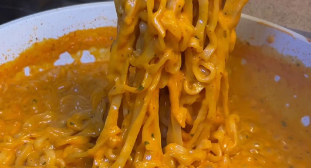

Buldak ramen is one of those food that if it is made right, it will hit the spot. If not, then you will be sitting in a corner, wondering all the life choices you have made prior to this. Today, I have compiled a very easy recipe made for broke students like me. It is so easy you can make it without any cooking skills. You just.. need to focus... so the water dont dry up. Yeah, that means no tiktok while cooking ramen, you honda civic.